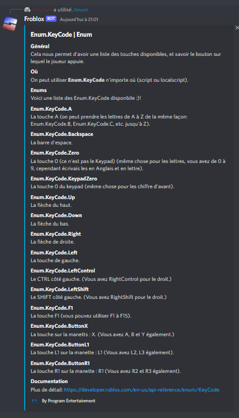

Actuellement, on utile les slash commands donc :
Par ailleurs, vous avez des choix disponibles!
Vous avez deux commandes à disposition:
Dans chaque élément, vous obtenez le lien vers la documentation (avec la recherche demandé).
Pour la commande
Concernant les
Exemple:
Ce qui nous donne: 
Sachez que ici vous ne voyez pas tout, il y a d'autres éléments donné!
Pour la commande
Pour les
Exemple:
Ce qui nous donne:

Pour la commande
Pour les
Exemple:
Ce qui nous donne: 
Pour la commande
Concernant les
Ensuite, pour l'élément, vous pouvez regarder le fichier et ensuite prendre un élément de ce dernier, par exemple dans le RunService nous trouvons une fonction
Les éléments s'obtiennent grâce à la commande
- propriétées
- fonctions
- évènements
Exemple :
Ce qui nous donne: 
Notez que vous ne devez pas mettre paranthèses, deux points ou autre !
Petite note à avoir concernant les enums ! Vous devrez donner un 3ème argument OBLIGATOIREMENT !
Exemple :